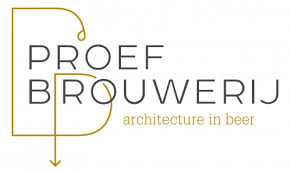

De Proefbrouwerij
De Proefbrouwerij는 1996년 설립된 벨기에 플랑드르 지역의 양조장이다. 다른 양조업자의 맥주를 위탁 생산하는 임대 양조장 방식으로 운영하며 자체 맥주도 만든다.
최종 업데이트

De Proefbrouwerij는 어떤 브랜드인가
이 양조장은 1996년 문을 연 벨기에 플랑드르 지역의 양조장으로, 헨트 인근 로크리스티 마을에 자리한다. 주로 임대 양조장으로 운영하며 제3자 양조업자를 위해 맥주를 만들어 준다.
자체 맥주도 생산하고, 양조 과학에 초점을 맞춘 연구개발 부서도 둔다. 자체 설비가 없거나 실험적인 소량 맥주를 만들려는 집시 양조업자에게 양조 시설을 제공하는 것이 핵심적인 역할이며, 위탁 고객의 범위도 넓다.
미국, 덴마크, 네덜란드, 스웨덴, 노르웨이, 영국, 한국 등 여러 나라의 양조장이 이곳의 설비를 이용한다. 지금은 자체 브랜드 생산과 위탁 양조, 양조 연구개발을 함께 수행하는 양조장이다.
De Proefbrouwerij의 브랜드 아이덴티티는 무엇인가
자체 맥주 브랜드 Reinaert를 두면서도 여러 나라의 집시 양조업자에게 설비를 빌려주는 임대 양조 중심의 벨기에 양조장이라는 점이 특징이다.
De Proefbrouwerij의 대표 제품과 서비스는 무엇인가
자체 맥주는 Reinaert라는 이름으로 출시한다. 라인업은 플랑드르 레드 에일(9%), 앰버 맥주(7%), 트리펠(9%), 그랑 크뤼(9.5%)이다.
이와 별도로 다른 양조장의 맥주를 위탁 생산하는 임대 양조 사업이 중심이며, 집시 양조업자는 이곳에서 실험적인 소량 맥주를 만들기도 한다. 위탁 고객에는 미국의 Bell's와 Surly, 덴마크의 Mikkeller와 To Øl, 스웨덴의 Omnipollo가 포함된다.
De Proefbrouwerij는 지금 어떤 상태인가
현재도 임대 양조장 방식으로 다른 양조업자의 맥주를 만들며 자체 맥주도 생산한다. 고객은 벨기에, 미국, 덴마크, 네덜란드, 한국, 스웨덴, 노르웨이, 영국 등 여러 나라에 걸쳐 있다.
한국에서는 Amazing Brewing Co., The Booth Brewing Co., Magpie Brewing Co.가 이곳을 이용한 양조장으로 꼽힌다.
De Proefbrouwerij 로고는 어떻게 변해왔나
자주 묻는 질문
De Proefbrouwerij는 어느 나라 브랜드인가요?
De Proefbrouwerij는 벨기에의 식음료 브랜드입니다.
De Proefbrouwerij는 언제 설립되었나요?
De Proefbrouwerij는 1996년 설립되었습니다.
De Proefbrouwerij의 브랜드 아이덴티티는 무엇인가요?
자체 맥주 브랜드 Reinaert를 두면서도 여러 나라의 집시 양조업자에게 설비를 빌려주는 임대 양조 중심의 벨기에 양조장이라는 점이 특징이다.
De Proefbrouwerij의 대표 제품은 무엇인가요?
자체 맥주는 Reinaert라는 이름으로 출시한다.
De Proefbrouwerij는 현재 어떤 상태인가요?
현재도 임대 양조장 방식으로 다른 양조업자의 맥주를 만들며 자체 맥주도 생산한다.
De Proefbrouwerij의 본사는 어디에 있나요?
De Proefbrouwerij의 본사는 Hijfte에 있습니다(위키데이터 기준).
De Proefbrouwerij의 공식 웹사이트는 어디인가요?
De Proefbrouwerij의 공식 웹사이트는 http://www.proefbrouwerij.com/ 입니다.
출처와 검증
De Proefbrouwerij 관련 참고: 공식 웹사이트 · 위키데이터 Q5244695 · 영어 위키백과. 브랜드명은 한글과 원어를 함께 표기하되 데이터에 없는 표기는 만들지 않습니다. 기원 국가·설립연도는 검수된 정의문에서 확인된 값을 우선하고, 없을 때만 공식 웹사이트 URL이 일치하는 위키데이터 개체의 값을 씁니다. 위키데이터 값은 2026-11-10 기준입니다.